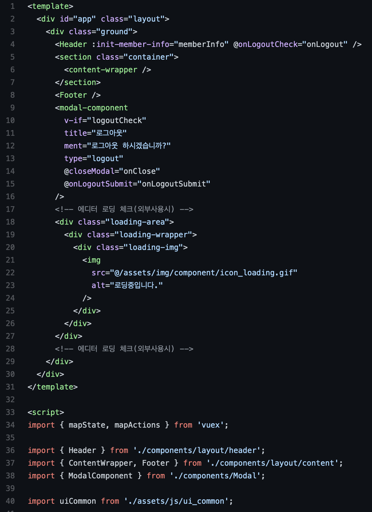

SPA(single page application) 환경으로 전체 페이지갱신없이 <tamplete>기반의 분활 모듈로 개발(뷰개발-프론트엔드)

<<< 아는 개발자분 메인페이지 코드(Vue.js)
이슈1,
보이는 것과 같이 각각의 비동기적으로 변경되는 마크업의 단위를 <tamplete>으로 묶어서 공통관리됨 왼쪽 이미지의 하단에 스크립트코드를보면 import해서 템플릿(Header, ContentWrapper, Footer, ModalComponent)을 호출해 돔을 그려준단걸 알수있음, 그리고 <tamplete> 자식의 length는 하나만 가질수있음(아래의 예제와 같이)
됨(O)
<tamplete>
<div> ...{코드}... </div>
</tamplete>
안됨(X)
<tamplete>
<div> ...{코드}... </div>
<div> ...{코드}... </div>
</tamplete>
고로 무슨일이 일어나냐면, 프론트엔드 개발자가 시블링관계의 다중항목이 템플릿화 하기위하여 상위에 감싸는 마크업을 추가할수 있으므로 css작업시 무분별한 ">" 선택자 사용(X)
이슈2,
우리 자랑스런 이아이랩의 퍼블리싱템플릿관련 이슈, 해당 Vue의 개발 특성상 앞서 말한것과 같이 템플릿화해서 제작하므로 우리 퍼블리싱마크업상 템플리화 될 태그(.header, .contianer, .footer)의 하위항목은 아마 이렇게 분류될듯함 여기서 문제 메인쪽 디자인 및 그 밖에 콘텐츠쪽 배경색을 넣어주기 위해선 ".container" 단에서 컨트롤 해주어야하는데, 프론트에서 개발시 템플릿 상위에서 제어해야하므로 해당사항 생각해둘필요 있음
마지막,
앞서말한바로 우리의 자랑스런 이아이랩 스크립트 호출프로세스 <head>에서 스크립트선언("ui_common_head.js?!") 기능 선언스크립트, <body> 하단의 스크립트선언("ui_common_body.js") 기능 실행스크립트 이런 분할은 참으로 불필요함을 느끼는 항목 이건 고려해보시길...그리고 SPA 특성상 변경되는 부분 항목만 갱신되므로, 비동기 uxui 스크립트의 처리가 필요함, 자세한 사항은 아래에서 기술하겠음
<templete>
<div> <!-- 모달까지 그룹화하기위한 추가 마크업 div -->
<div class="layout">
<Header /> <!-- 헤더 템플릿 -->
<div class="containter">
<ContentsWrap /> <!-- 콘텐츠 템플릿 -->
</div>
<Footer /> <!-- 푸터 템플릿 -->
</div>
<Modal /> <!-- 모달 템플릿 -->
</div>
</templete>
<script>
import { Header } from './layout/header'
import { ContentsWrap } from './layout/contentswrap'
import { Footer } from './layout/footer'
import { Modal } from './layout/modal'
</script>
왼쪽 코드와 같이(우리의 자랑스런 이아이랩🤞)의 팝업의 위치는 .layout과 시블링 관계일 것이므로 Vue단에서 왼쪽의 div의 같은 템플릿화(이슈1)를 위한 감싸는 구조를 보일것임 이와같은 템플릿이 될거 같은 구조들을 고려하시길 또한 반응형웹이다보니 모바일의 경우 pc의 경우 각각의 노출&비노출의 정의에 따른 마크업상 분할해주어야하는 경우가 생길듯함; 필요에의하지않은 css선택자 ">" 사용은 앞서말한 div생성 템플릿화로 망길로 갈수 있으니 신중하길... 또한 페이지가 추가되며, 또한 디자인변수로 레이아웃을 건드는 상황이 발생할수도 있으니 개발초기에 개발자랑 이야기하며, 공통페이지 처리가 어떻게 진행되고 있는지 확인하는 것을 추천함👍 페퍼가 어떻게 진행될지는 모르지만, 이아이랩 퍼블리싱템플릿은 가이드이므로 필요하면 다뜯어고쳐도됩니다(난 암웨이할때 레이아웃 다뜯어버림) 디자인이 어느정도 진행되고 픽스된다 싶으면 주저말고 필요한부분은 뜯어요. 이아이랩 템플릿은 완벽하지 않습니다.
<!-- 우리 자랑스런 이아이랩 템플릿-->
<div class="layout">
<div class="header">
<div class="header_wrap">
// 상단메뉴
<div class="gnb">
span
</div>
</div>
</div>
<div class="containter">
<div class="contents_wrap">
<div class="contents">
</div>
</div>
</div>
<div class="footer">
</div>
</div>